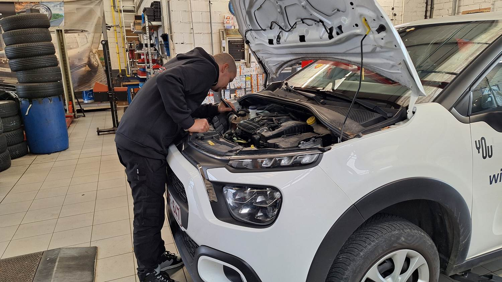
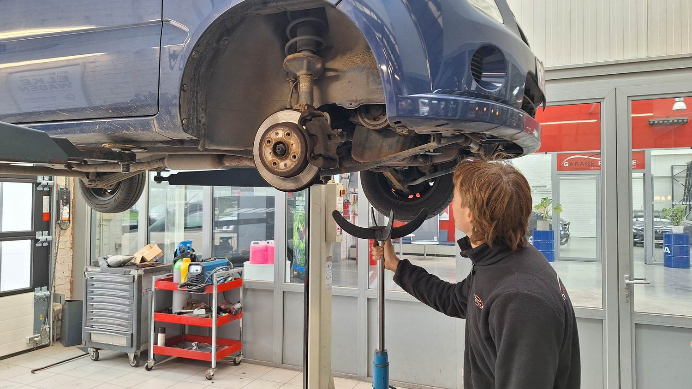
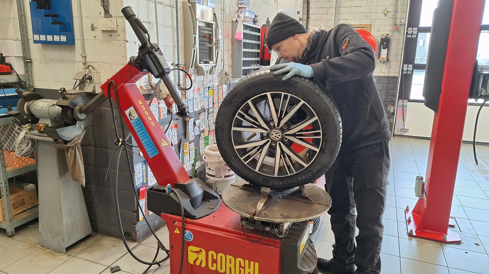
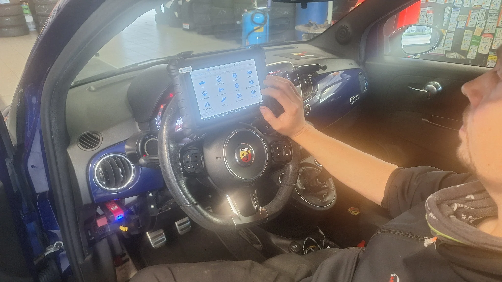
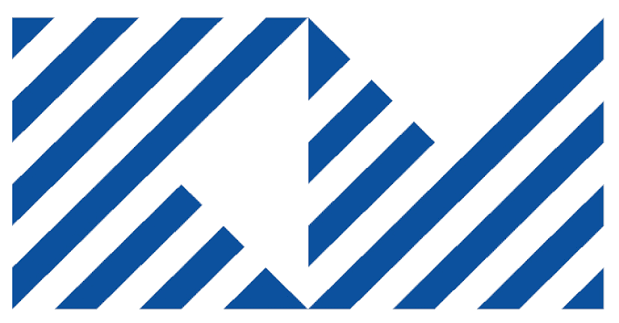
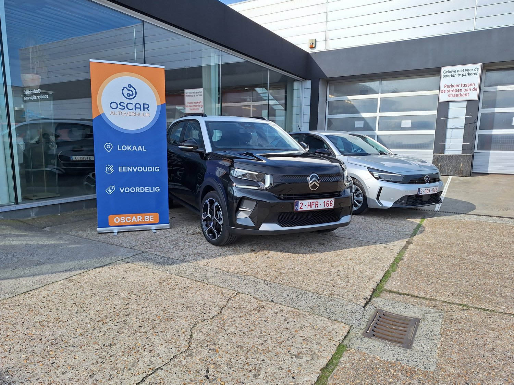
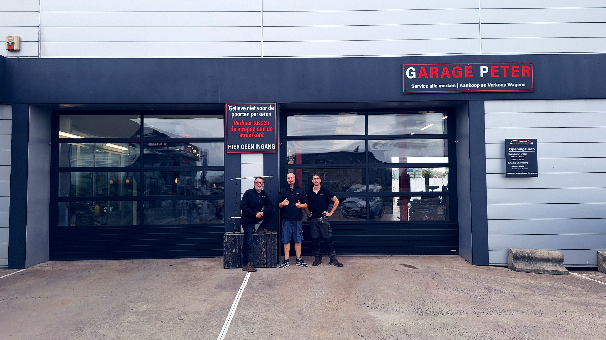

🔧 Onderhoud & herstellingen
Onderhoud en mechanische herstellingen voor alle automerken, inclusief vakkundige vervanging van PureTech-distributieriemen volgens de toepasselijke voorschriften.
Onderhoud, herstellingen en diagnose met duidelijke uitleg en een persoonlijke aanpak. Bij Garage Peter ben je welkom met alle automerken.
Van een klein onderhoud tot een complexe storing: we zoeken naar een passende oplossing en bespreken de werken duidelijk.


Onderhoud en mechanische herstellingen voor alle automerken, inclusief vakkundige vervanging van PureTech-distributieriemen volgens de toepasselijke voorschriften.

Nieuwe banden kopen en laten monteren in Bredene. Ook voor bandenbalancering, een lekke band en advies over zomer-, winter- en vierseizoensbanden.

Foutcodes, motorstoringen en vermogensverlies onderzoeken met professionele diagnoseapparatuur.

Technische controle en voorbereiding op de autokeuring, met aandacht voor veiligheid en uitstoot.

Bij Garage Peter kun je ook terecht voor roetfilter- en katalysatorreiniging en motorontkalking. Voor de uitgebreide uitleg, tarieven en praktijkvoorbeelden verwijzen we je naar onze gespecialiseerde website.

Huurwagens, bestelwagens en andere mobiliteitsoplossingen via Oscar.

Autopech op een camping in Bredene of tijdens een dagje aan zee? Bel Garage Peter voor hulp en opvolging. Bij ongevallen werken we samen met een gespecialiseerd depannagebedrijf.

Carrosserieherstellingen, ook via de verzekering. Garage Peter verzorgt het overleg met de expert en de opvolging van het schadedossier en de herstelling.
.jpg)
Op zoek naar een tweedehandswagen? Bekijk ons actuele aanbod op tweedehandswagens-bredene.be of kom langs in onze garage voor meer informatie.
Bij ons kun je terecht voor tweedehandswagens. Bekijk de beschikbare wagens via onze aparte verkoopwebsite of spring binnen in de garage.
We helpen je graag bij het zoeken naar een wagen die bij je wensen past. Neem vooraf contact op als je voor een specifieke wagen komt.
Peter, Adam en Thomas vormen samen het team van Garage Peter in Bredene. Met een passie voor auto's, technische kennis en een persoonlijke aanpak staan we klaar voor onderhoud, herstellingen, diagnose en gespecialiseerde roetfilterbehandelingen.
Bij ons kun je rekenen op duidelijke communicatie, correcte afspraken en degelijk werk.
Neem contact op →
Via onze samenwerking met Oscar Autoverhuur kun je een personenwagen, bestelwagen, minibus of verhuiswagen huren. Handig wanneer je wagen in herstelling staat of je tijdelijk extra vervoer nodig hebt.
Meer over autoverhuur →Je kunt je onderhoud of herstelling bij Garage Peter combineren met een huurwagen. Vraag ons gerust naar de mogelijkheden.
Bel of mail ons voor onderhoud, diagnose, herstellingen of vragen over een tweedehandswagen. Op aanvragen reageren we doorgaans binnen één dag.
Middagpauze van 12.00 tot 13.30 uur. Zaterdagmiddag: showroom enkel op afspraak.